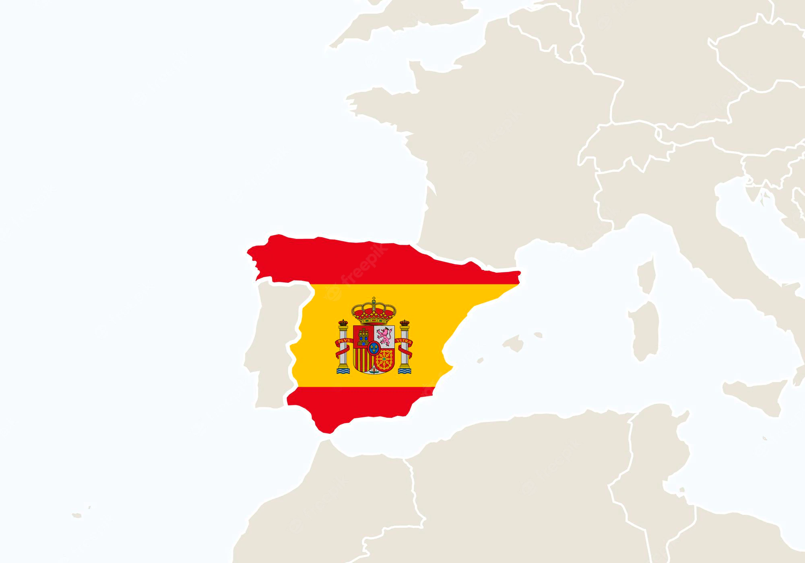

Spanien (spanisch España?/i [esˈpaɲa], amtlich Königreich Spanien, spanisch Reino de España [ˈrejno ð(e) esˈpaɲa]) ist ein Staat auf der Iberischen Halbinsel im Südwesten Europas, mit den Balearischen Inseln im Mittelmeer, den Kanarischen Inseln im Atlantik und zwei Exklaven in Nordafrika. Staatsform ist eine parlamentarische Erbmonarchie. Spanien untergliedert sich in 17 autonome Gemeinschaften und zwei autonome Städte (spanisch ciudades autónomas), Ceuta und Melilla. Die Hauptstadt und größte Metropole ist Madrid, weitere Ballungszentren sind Barcelona, Valencia, Sevilla, Bilbao, Zaragoza und Málaga. Spanien ist Mitglied der UNO, der EU, der OECD und der NATO. Es zählt zu den sehr hoch entwickelten Ländern und zu den 20 größten Export- und Importnationen (2017).[6] Spanien ist nach Frankreich das am zweithäufigsten besuchte Land der Welt[7] und auch nach diesem das flächenmäßig zweitgrößte Land der EU.
| Amtssprache | Spanisch |
| Hauptstadt | Madrid |
| Staats- und Regierungsform | parlamentarische Monarchie |
| Staatsoberhaupt | König Felipe VI |
| Regierungschef | Regierungspräsident Pedro Sanchez |
| Fläche | 595.970 km² |
| Einwohnerzahl | 47,1 Millionen |
| Bevölkerungsdichte | 94 Einwohner pro km² |
| Bevölkerungsenticklung | + 0,6 % |
| Währung | Euro (EUR) |
| Nationalhymne |
Spanien befindet sich, ebenso wie Portugal (im Westen) und das zum Vereinigten Königreich gehörende Gibraltar (im Süden), auf der Iberischen Halbinsel zwischen 36° und 43,5° nördlicher Breite und 9° westlicher und 3° östlicher Länge (ohne Balearen, Kanaren, Ceuta und Melilla). Spanien nimmt knapp sechs Siebtel der Iberischen Halbinsel ein. Im Nordosten, entlang des Gebirgszuges der Pyrenäen, grenzt Spanien an Frankreich und den Kleinstaat Andorra. Außerdem gehören die im Mittelmeer gelegenen Balearen und die Kanaren im Atlantik sowie die an der nordafrikanischen Küste gelegenen Städte Ceuta und Melilla zum Staatsgebiet. In Frankreich besitzt Spanien die Exklave Llívia. Weiter gehören Spanien mehrere unmittelbar vor der marokkanischen Küste gelegene Inseln: Islas Chafarinas, Peñón de Alhucemas, Isla del Perejil, dazu die Halbinsel Peñón de Vélez de la Gomera. Die Isla de Alborán liegt 50 Kilometer nördlich der marokkanischen Küste. Eine weitere Gruppe kleiner Inseln und Felsen, die Islas Columbretes, liegt etwa 55 Kilometer östlich von Castellón de la Plana, auf demselben Breitengrad wie Mallorca. Der nördlichste Punkt Spaniens ist die Estaca de Bares in Galicien, auf dem Festland sind der westlichste Punkt das Cabo Touriñán (ebenfalls in Galicien), der südlichste die Punta Marroquí bei Tarifa und der östlichste das Cap de Creus an der Costa Brava. Die größte Ausdehnung von Norden nach Süden beträgt 856 Kilometer und von Osten nach Westen 1020 Kilometer. Der westlichste (Punta de la Orchilla) und der südlichste (La Restinga) Punkt Gesamtspaniens liegen auf der kanarischen Insel El Hierro, der östlichste auf der Baleareninsel Menorca. Das Staatsgebiet weist mit einer mittleren Höhe von ca. 660 msnm einen der höchsten Werte Europas auf. Die räumliche Gliederung der Halbinsel wird wesentlich durch sechs große Gebirgssysteme bestimmt.
Zwischen 1999 und 2009 stieg die Bevölkerung Spaniens sehr stark an, sowohl verglichen mit anderen europäischen Staaten als auch im Vergleich zu den Jahrzehnten davor. So stieg in den 1990er-Jahren die Bevölkerung Spaniens um 1,1 Millionen und im ersten Jahrzehnt des 21. Jahrhunderts um 7 Millionen. Ein Großteil des Bevölkerungswachstums ging auf Zuwanderung zurück. So stieg die ausländische Bevölkerung von 0,74 Millionen im Jahr 1999 auf 5,73 Millionen 2011. Hierbei ist noch zu beachten, dass es auch Einbürgerungen gab. Die Fruchtbarkeitsrate lag im Jahr 2016 in Spanien mit rund 1,34 Kindern pro Frau unter dem EU-Schnitt von 1,60.[13] Im Jahre 2016 betrug das Durchschnittsalter in Spanien 43,1 Jahre.[14] Die durchschnittliche Lebenserwartung der Spanier wurde im Jahr 2012 mit 82,5 Jahren ermittelt und erreichte damit in der Europäischen Union vor Italien (82,4) und Frankreich (82,1) den höchsten Wert.[15][16] Die durchschnittliche Lebenserwartung der Männer betrug demnach 79,5 Jahre, die der Frauen 85,5 Jahre.[17] Im Jahr 2007 waren 16,7 Prozent der Bevölkerung älter als 65 Jahre.[18] Aufgrund der hohen Lebenserwartung in Verbindung mit der niedrigen Fertilität wird davon ausgegangen, dass Spanien in Zukunft eine der ältesten Gesellschaften der Welt werden wird.